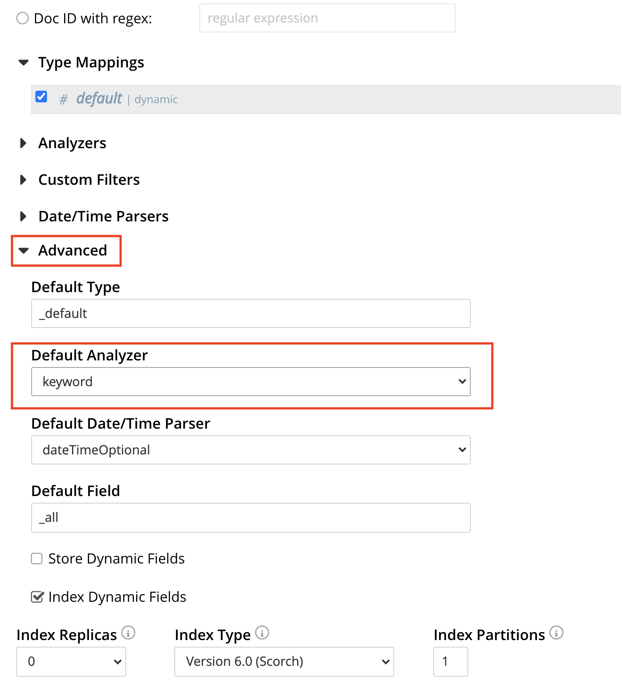

The Flex Index feature enables you run a SQL++ query as a full-text search query, using a full-text index. This means that you can write queries in SQL++ to leverage the Search service’s keyword search capabilities.
In Couchbase Server, a global secondary index (GSI) uses a B-tree structure for fast exact search, whereas full-text search (FTS) uses an inverted index to provide efficient term search. In Couchbase Server 6.5 and later, it is possible to perform a full-text search within a SQL++ query using search functions. However this requires you to write the full-text search using the FTS syntax.
Starting with Couchbase Server 6.6, the Flex Index feature provides the ability for a SQL++ query to leverage either a global secondary index or full-text index transparently with standard SQL++ syntax, simplifying the application development process.
The full-text index must be defined in a certain way to be usable by a SQL++ query; similarly, the SQL++ query must have certain characteristics to be able to use the full-text index. If these requirements are met, the query is transformed into an FTS query, and run against the full-text index.
Using a Flex Index query may offer advantages in the following situations:
-
When the search conditions are not predetermined.
-
When the search predicate involves a large number of fields combined using AND or OR.
-
When the search predicate involves multiple arrays.
-
When an application requires a full-text search combined with SQL++ aggregation or joins.
For a general introduction to creating full-text indexes, refer to Creating Indexes.
Overview
To understand how a SQL++ query can make use of a full-text index, it’s important to understand the differences between the semantics of SQL++ queries and full-text indexes, and the restrictions that arise from these differences.
Semantic Differences
Full-text indexes have different semantics to SQL++ queries. Some of the main differences are described here.
-
SQL++ uses escaped path names, whereas full-text indexes flatten the field names.
-
SQL++ uses array subscripts to identify array objects, for example
1.arr1[0].b; whereas full-text indexes ignore subscripts, for examplef1.arr1.b. This means full-text indexes cannot uniquely identify the path. -
In SQL++, data can be compared across data types. This is not possible with a full-text index.
-
SQL++ handles MISSING fields, whereas these are not handled by a full-text index.
Restrictions
Because of the semantic differences described above, there are several restrictions to the way a Flex Index query can use a full-text index.
-
A Flex Index query cannot use a full-text index as a covering index.
-
A Flex Index query cannot use a full-text index with a query on fields whose names contain special characters.
-
A Flex Index query may include LIMIT and OFFSET clauses, but they cannot be pushed down to the full-text index.
-
A Flex Index query may include Aggregate functions and Window functions, but they cannot be pushed down to the full-text index.
Flex Index queries only make use of full-text indexes to find the access path to the required data. The query engine then fetches the data from the data service.
Flex Index queries may use full-text indexes to do an intersect scan with other indexes. For further details, refer to Usage below.
Index Availability
Full-text indexes are online and searchable as soon as they are created. GSI indexes are online and searchable after they have been built. For further details, refer to BUILD INDEX.
Usage
Assuming that there is no search function in the query predicate, there are two ways to specify that you would like to use a full-text index with a SQL++ query:
-
Use the
USE FTShint in the SQL++ query. For full details, refer to USE Clause. -
Set the
use_ftsrequest-level parameter totrue. For full details, refer to Settings and Parameters.
When using an index hint, you may specify preferred indexes by name, or simply specify the preferred index type — FTS or GSI.
It is possible to specify mixed index types.
SELECT META(d).id
FROM default AS d
USE INDEX (USING FTS)
WHERE d.f1 = "xyz" AND d.f2 = 100;In this case:
-
The query engine considers all available full-text indexes.
-
If any full-text index qualifies, the full-text index is used.
-
If none of the full-text indexes qualify, the query engine considers other available GSI and primary indexes, following existing rules.
SELECT META(d).id
FROM default AS d
USE INDEX (USING FTS, USING GSI)
WHERE d.f1 = "xyz" AND d.f2 = 100;In this case:
-
If any GSI index covers the query, the covering index is used and all other indexes are ignored.
-
If the query is not covered, the query engine considers all available full-text indexes and GSI indexes.
-
If any full-text indexes qualify, the query engine does an intersect scan of all the qualified full-text indexes and GSI indexes.
-
If none of the full-text indexes qualify, the query engine considers other available GSI and primary indexes, following existing rules.
SELECT META(d).id
FROM default AS d
USE INDEX (fix1 USING FTS, gix1 USING GSI)
WHERE d.f1 = "xyz" AND d.f2 = 100;In this case:
-
If the specified GSI index covers the query, the covering index is used and all other indexes are ignored.
-
If the query is not covered, the query engine considers the specified full-text indexes and all available GSI indexes.
-
If the specified full-text index qualifies, the query engine does an intersect scan of the full-text index and all qualified GSI indexes.
-
If the specified full-text index does not qualify, the query engine considers other available GSI and primary indexes, following existing rules.
In all cases, if the query meets the requirements to use a full-text index, and a qualified full-text index is selected, the query is transformed into an FTS simple query (not a query string query), and the simple query is run against the qualified full-text index.
| If the query predicate contains a search function, none of this applies — instead, an index is selected for the query according to the method described on the Search Functions page. |
Full-Text Index Requirements
In order to use a full-text index with a SQL++ query, the full-text index must meet certain requirements.
Analyzer
The full-text index must use the keyword analyzer.
To specify that a full-text index should use the keyword analyzer:
-
In the Add Index, Edit Index, or Clone Index screen, click the Advanced heading to display the Advanced settings panel.
-
Open the Default Analyzer pull-down menu and select
keyword.
Type Mappings
The full-text index must use one of the following type mappings:
-
The default type mapping
-
A single custom type mapping
-
Multiple custom type mappings
The full-text index may not use the default type mapping along with one or more custom type mappings.
Indexed Fields
If the full-text index uses the default type mapping, only child mappings and fields mapped under the default type mapping can be used in a query. In case of dynamic mapping or dynamic child mappings, any field within the mapping can be used within a query.
If the full-text index has multiple custom type mappings, all the fields that you want to query must be indexed within all the requested type mappings.
Child mappings and fields mapped under top level type mappings can all be used within a query, provided they are enabled.
When creating a full-text definition in the Couchbase Web Console, the child fields listed by field name or by searchable as may be used within a SQL++ query.
| The type field in a custom type mapped index is not searchable. |
A full-text index definition contains the following child fields:
{
"reviews": {
"enabled": true,
"dynamic": false,
"properties": {
"review": {
"enabled": true,
"dynamic": false,
"properties": {
"author": {
"enabled": true,
"dynamic": false,
"fields": [{
"name": "author", (1)
"type": "text",
"index": true,
"analyzer": "keyword"
}]
}
}
}
}
},
"id": {
"enabled": true,
"dynamic": false,
"fields": [{
"name": "id", (2)
"type": "number",
"index": true
}]
}
}A query may search the following fields with this full-text index:
| 1 | The reviews.review.author field |
| 2 | The id field |
Query Requirements
In order to use a full-text index with a SQL++ query, the query must also meet certain requirements.
Conditional Expression for Custom Type Mappings
If the full-text index has a single custom type mapping, the query predicate must contain an expression matching the type, independent of the rest of the predicate.
A full-text index definition contains the following custom type mapping:
"doc_config.mode": "type_field",
"doc_config.type_field": "type"The following query can be used with this full-text index:
SELECT meta().id
FROM `keyspace` USE INDEX (USING FTS)
WHERE type = "hotel" (1)
AND country = "US";| 1 | Conditional expression matching the type mapping |
If you have several expressions within the WHERE clause, the query engine needs to be able to resolve the conditional expression without any ambiguity, to avoid the possibility of false negatives.
The following query is ambiguous, and cannot be used with the full-text index defined in Example 5:
SELECT meta().id
FROM `keyspace` USE INDEX (USING FTS)
WHERE type = "hotel" AND country = "US" OR country = "CAN";With brackets setting the priority of the AND and OR operators, the following queries are unambiguous, and can be used with the full-text index defined in Example 5:
SELECT meta().id
FROM `keyspace` USE INDEX (USING FTS)
WHERE type = "hotel" AND (country = "US" OR country = "CAN");SELECT meta().id
FROM default USE INDEX (USING FTS)
WHERE type = "hotel"
AND (
country = "US" OR country = "CAN"
AND id >= 0 AND id <= 10
OR id >= 20 AND id <= 30
);SELECT meta().id
FROM default USE INDEX (USING FTS)
WHERE type = "hotel"
AND (country = "US" OR country = "CAN")
AND (id >= 0 AND id <= 10 OR id >= 20 AND id <= 30);Similarly, if the full-text index contains multiple custom type mappings, the query engine needs to be able to resolve the conditional expression without any ambiguity, to avoid the possibility of false negatives.
The following predicates can be used with a full-text index with multiple custom type mappings:
WHERE type = "xyz"
WHERE (type = "xyz" OR type = "abc")The following predicate cannot be used with a full-text index with multiple custom type mappings:
WHERE type = "xyz" OR type = "abc"SQL++ Predicates
SQL++ predicates can be used with a Flex Index query, as long as they meet certain requirements, as detailed below.
Equality Expressions
You can use an equality expression with a full-text index, as long as the field is either explicitly indexed, or if the indexing is dynamic within the keyword analyzer.
The following predicates can be used with a dynamic keyword index:
WHERE a = "12"
WHERE b = true
WHERE c = 13A full-text index has the following explicitly indexed fields: a (text), b (boolean), c (numeric).
The following predicates can be used with this full-text index:
WHERE a = "12"
WHERE b = trueThe following predicates cannot be used with this full-text index:
WHERE c = "13" (1)
WHERE d = "N/A" (2)| 1 | c is indexed as numeric |
| 2 | d is not indexed |
The left-hand side of an equality expression must be a field name or a fully-qualified path. It may not be an expression. Conversely, the right-hand side of an equality expression may not depend on the keyspace.
The following predicate can be used with a full-text index:
WHERE state = LOWER("CALIFORNIA")The following predicate cannot be used with a full-text index:
WHERE LOWER(state) = "california" (1)| 1 | Left-hand side is an expression |
AND Expressions
You can use an AND expression with a full-text index.
Partial sargability is supported: this means that one or both of the requested child expressions must be indexed for the query to use a full-text index.
If there’s a possibility of false positives, the query engine filters the results using KV fetches.
In a full-text index, the fields a and b are indexed.
The following expressions can be used with this full-text index:
WHERE a = "12" AND b = "34" (1)
WHERE a = "12" AND d = "56" (2)| 1 | Searches for a and b using the full-text index |
| 2 | Searches for a using the full-text index, and uses KV fetch to filter results for d |
The following expressions cannot be used with this full-text index:
WHERE d = "56" AND e = "78" (1)| 1 | Neither d nor e are indexed |
OR Expressions
You can use an OR expression with a full-text index.
Partial sargability is not supported: all the requested child expressions must be indexed.
This is to avoid false negatives.
In a full-text index, the fields a and b are indexed.
The following expressions can be used with this full-text index:
WHERE a = "12" OR b = "34" (1)
WHERE a = "12" OR a = "98" (2)| 1 | Searches for a and b using the full-text index |
| 2 | Searches for a using the full-text index |
The following expressions cannot be used with this full-text index:
WHERE a = "12" OR d = "56" (1)| 1 | d is not indexed (false negatives) |
Compound Expressions
You can use compound expressions with a full-text index, as long as they respect the rules of AND Expressions and OR Expressions expressions described above, and do not return false negatives.
A full-text index definition has a type mapping X with 2 child fields — name (text), age (numeric).
The following predicate can be used with this full-text index:
WHERE type = "X" AND name = "abc" AND age = 10 (1)| 1 | No chance of false negatives, all fields are sargable |
The following predicates cannot be used with this full-text index:
WHERE type = "X" OR name = "abc" AND age = 10 (1)
WHERE type = "X" AND name = "abc" OR age = 10 (2)| 1 | This is treated as an OR expression: (type = "X") OR (name = "abc" AND age = 10) |
| 2 | This is treated as an OR expression: (type = "X" AND name = "abc") OR (age = 10) |
AND takes precedence over OR, so these predicates are treated as OR expressions. Both child expressions of an OR expression must be indexed. Therefore these predicates cannot be used with a full-text index.
However, the following predicate can be used with this full-text index:
WHERE type = "X" AND (name = "abc" OR age = 10) (1)| 1 | Brackets alter the order of precedence so there is no chance of false negatives |
Range Expressions
You can use range expressions with a full-text index, as long as the range expressions meet the following criteria:
-
Ranges must be deterministic: that is, they should have a clear start and finish.
-
Range boundaries must be of the same data type.
-
The maximum range boundary expression must always come after the minimum range boundary expression.
-
If there are several range expressions, or there is a mixture of range expressions and other expressions, the range expressions need to be contiguous.
The following range expressions can be used with a full-text index:
WHERE a >= 10 AND a <= 20
WHERE b >= "hot" AND b <= "hotel"
WHERE c >= "2020-03-01" AND c <= "2020-04-01" (1)
WHERE type = "xyz" AND a >= 10 AND a <= 20
WHERE a >= 10 AND a <= 20 AND type = "xyz"
WHERE type = "xyz" AND (a >= 10 AND a <= 20) (2)| 1 | Ranges are deterministic, range boundaries are of similar type, and maximum range boundary comes after minimum range boundary |
| 2 | Range expressions are contiguous |
The following range expressions cannot be used with a full-text index:
WHERE a >= 10
WHERE b < "hotel"
WHERE c > "2020-03-01"
WHERE a >= 10 OR a <= 20 (1)
WHERE a <= 20 AND a >= 10
WHERE a >= 20 AND a <= 10 (2)
WHERE a >= 10 AND a <= "hot" (3)
WHERE a >= 10 AND type = "xyz" AND a <= 20 (4)| 1 | Ranges are open-ended (non-deterministic) |
| 2 | Maximum range boundary comes before minimum range boundary |
| 3 | Range boundaries are of different data types |
| 4 | Range expression is not contiguous |
ISSTRING() and ISNUMBER()
You can use the ISSTRING() and ISNUMBER() functions as a workaround to support open-ended ranges with a full-text index.
-
The query engine translates
ISSTRING(x)to a range establishing the data type of the object as a string, i.e. greater than or equal to an empty string, and less than an empty array:"" <= x AND x < []. -
The query engine translates
ISNUMBER(y)to a range establishing the data type of the object as numeric, i.e. greater than the boolean valuetrue, and less than an empty string:true < y AND y < "".
Refer to Collation for more information.
The following open-ended ranges can be used with a full-text index:
WHERE ISSTRING(name) AND name >= "abhi" (1)
WHERE ISNUMBER(age) AND age > 30 (2)| 1 | An open-ended range specifying any string later than "abhi". |
| 2 | An open-ended range specifying any number greater than 30. |
LIKE Expressions
You can use a LIKE expression with a full-text index, as long as the LIKE expression contains a simple string, or a string followed by the % wildcard.
If the LIKE expression contains a simple string, it must respect the rules outlined in the Equality Expressions section above.
A string followed by the % wildcard, such as a LIKE bc%, will be treated as a range expression.
Other LIKE expressions cannot be used with a full-text index.
The following predicates may be used with a full-text index:
WHERE a LIKE "hotel" (1)
WHERE a LIKE "hote%" (2)| 1 | The query engine treats this expression as the equality expression a = "hotel" |
| 2 | The query engine treats this expression as the range a >= "hote" AND a <= "hotf" |
BETWEEN Expressions
You can use a BETWEEN expression with a full-text index.
The range specified by the BETWEEN expression must respect the rules outlined in the Range Expressions section above.
BETWEEN expressions that mix data type boundaries cannot be used with a full-text index.
The following predicate may be used with a full-text index:
WHERE a BETWEEN 10 AND 20 (1)| 1 | The query engine treats this expression as the range a >= 10 AND a <= 20 |
ANY … IN … SATISFIES Expressions
You can use an ANY … IN … SATISFIES expression with a full-text index.
The ANY … IN … SATISFIES expression must operate over an array, which may be an array of objects or any supported data types.
A full-text index definition contains the following type mapping over documents of type "hotel".
{
"hotel": {
"default_analyzer": "keyword",
"enabled": true,
"properties": {
"reviews": {
"enabled": true,
"properties": {
"ratings": {
"enabled": true,
"properties": {
"Cleanliness": {
"enabled": true,
"fields": [
{
"index": true,
"name": "Cleanliness",
"type": "number"
}
]
},
"Overall": {
"enabled": true,
"fields": [
{
"index": true,
"name": "Overall",
"type": "number"
}
]
}
}
},
"author": {
"enabled": true,
"fields": [
{
"index": true,
"name": "author",
"type": "text"
}
]
}
}
},
"public_likes": {
"enabled": true,
"fields": [
{
"index": true,
"name": "public_likes",
"type": "text"
}
]
}
}
}
}The following predicates may be used with this full-text index:
WHERE type = "hotel" AND ANY r in reviews SATISFIES r.author = "xyz" END WHERE type = "hotel" AND ANY r in reviews SATISFIES r.ratings.Cleanliness = 5 OR r.ratings.Overall = 4 END WHERE type = "hotel" AND ANY r in reviews SATISFIES r.ratings.Cleanliness = 5 OR r.ratings.Overall = 4 END AND ANY p in public_likes SATISFIES p LIKE "xyz" END
EVERY … IN … SATISFIES Expressions
You can use an EVERY … IN … SATISFIES expression with a full-text index.
The EVERY … IN … SATISFIES expression must operate over an array, which may be an array of objects or any supported data types.
The following predicate may be used with the full-text index defined in Example 18:
WHERE EVERY r IN reviews SATISFIES r.ratings.Cleanliness = 5 END
ANY AND EVERY … IN … SATISFIES Expressions
You can use an ANY AND EVERY … IN … SATISFIES expression with a full-text index.
The ANY AND EVERY … IN … SATISFIES expression must operate over an array, which may be an array of objects or any supported data types.
The following predicate may be used with the full-text index defined in Example 18:
WHERE ANY AND EVERY r IN reviews SATISFIES r.ratings.Cleanliness = 5 END
JOINs
JOINs may be used with a full-text index, as long as the JOIN predicate meets the requirements to be used with a full-text index. Refer to SQL++ Predicates above.